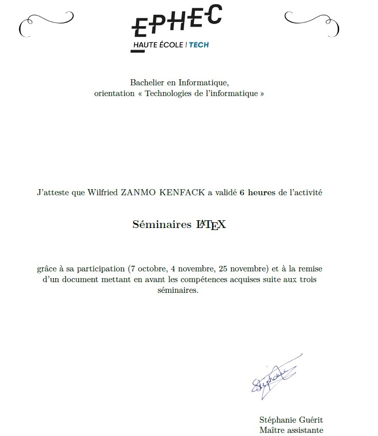
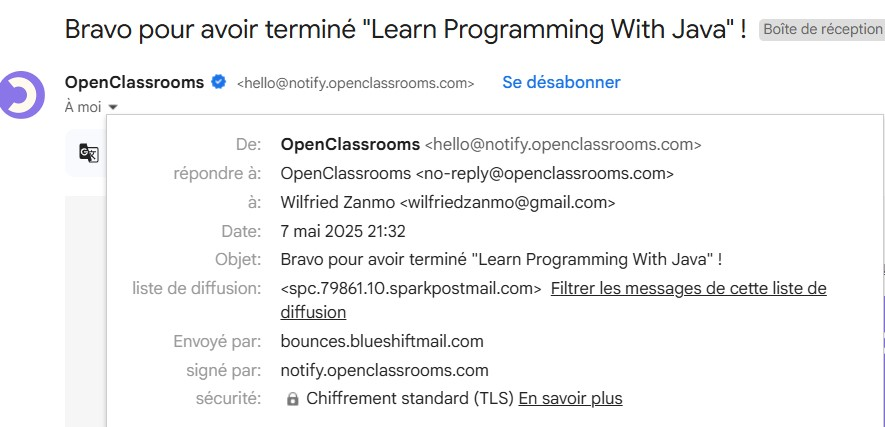
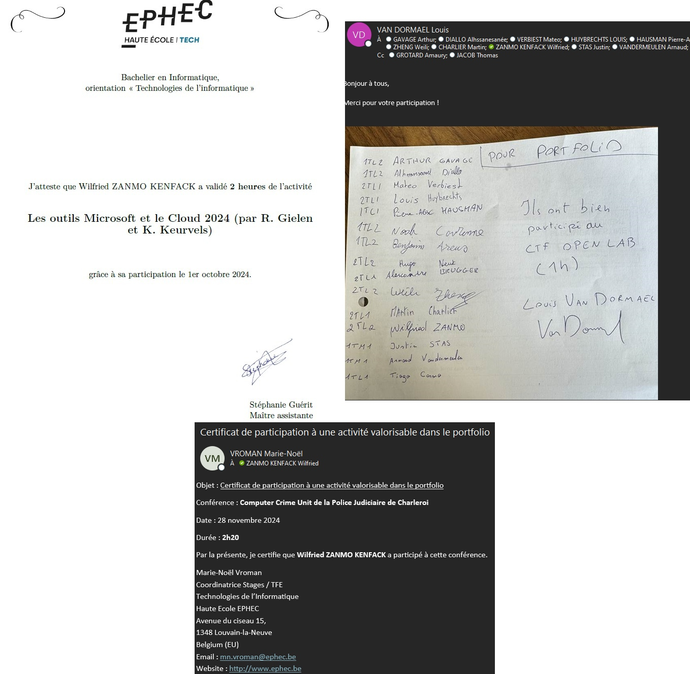
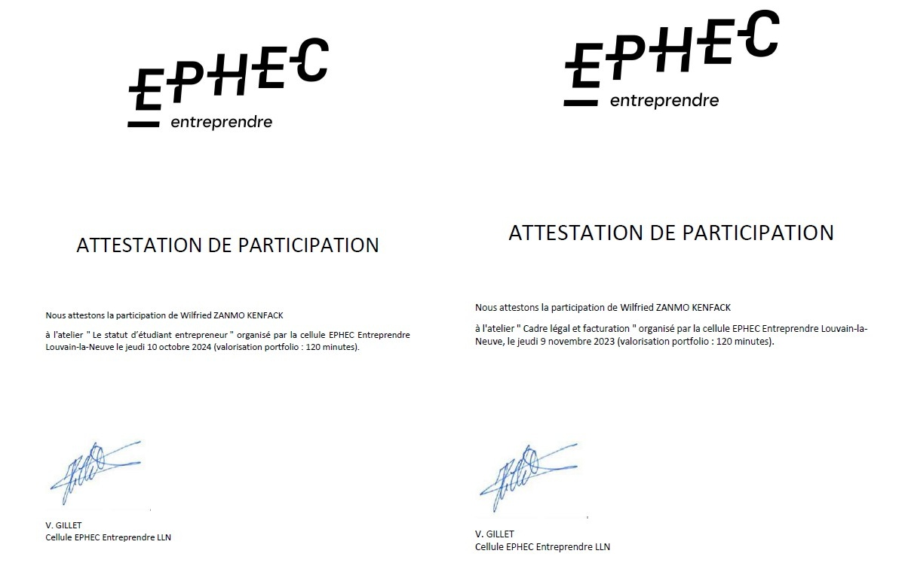
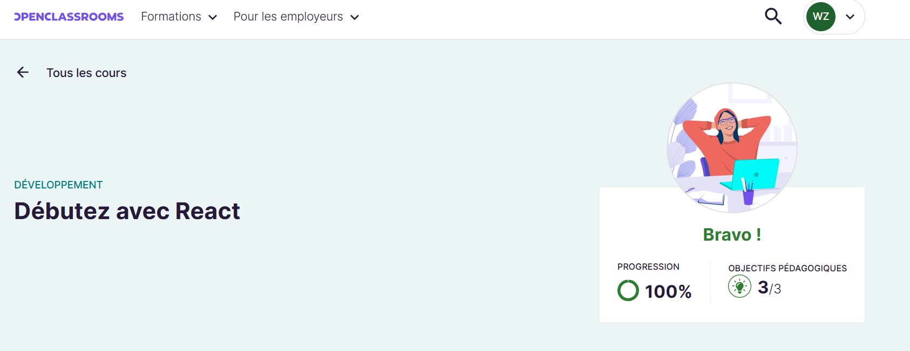
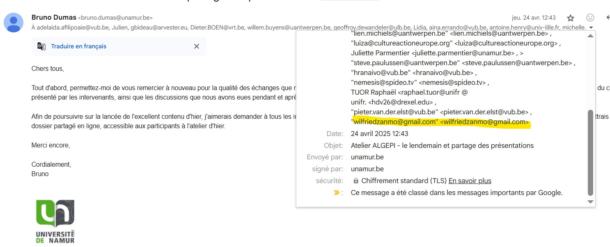
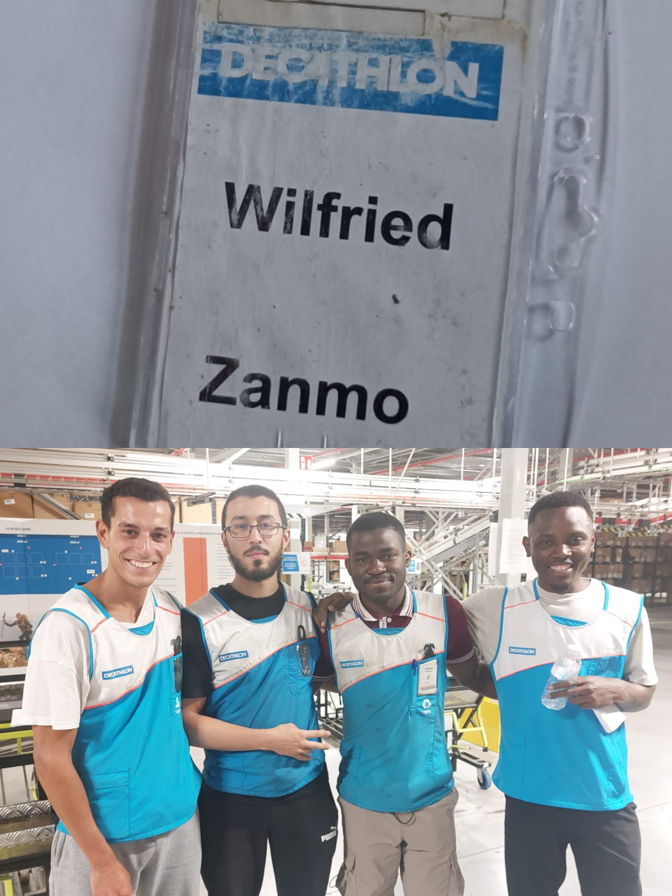
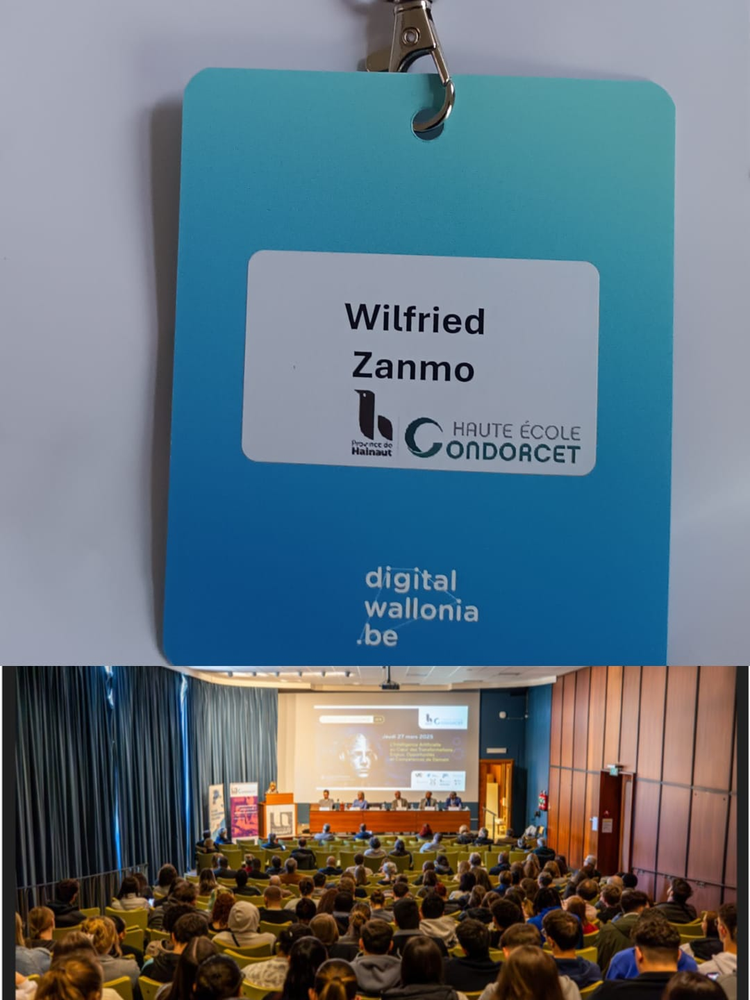

J'ai participé à un séminaire sur LaTeX organisé par Madame Guerrit. Celui-ci s'est déroulé en trois périodes. À chaque séance, nous avons appris à utiliser différents outils de LaTeX. J'ai trouvé cela très utile, car j'ai pu m'en servir pour rédiger mon rapport de stage ainsi que mon TFE.
Dans le cadre de mon apprentissage, j'ai suivi une formation sur OpenClassrooms Java J'ai suivi une formation afin d'apprendre les bases de ce langage, nécessaire pour mon stage.
Lors de la conférence FCCU, nous avons eu l'honneur d'accueillir un agent de la police judiciaire, spécialisé dans le département IT. Il nous a parlé de son travail, qui consiste à analyser les preuves numériques telles que les appels, les SMS, ou d'autres données digitales. Ce métier nécessite également une présence sur le terrain, car il arrive que les agents doivent se rendre directement sur les lieux pour effectuer des analyses. Nous avons également échangé sur le Cloud avec des collaborateurs d’Axentys ; ils nous ont fait une démonstration d’Azure, la plateforme cloud de Microsoft, où j’ai pu découvrir des fonctionnalités telles que le déploiement automatisé de sites web et d’infrastructures.
j'ai participé à des réunions sur la facturation et le statut d'étudiant entrepreneur organisées par EPHEC Entreprendre.
Dans le cadre de mon apprentissage, j'ai suivi une formation sur OpenClassrooms React un framework que j'ai utilisé dans divers projets à l'école
En avril 2025, j’ai eu le plaisir d’assister à la conférence annuelle ALGEPI, organisée à l’Université de Namur autour du thème « AI to the Future : User-Centric Innovation and Media Regulation ». Cet événement a réuni des spécialistes de l’IA, des professionnels des médias et des chercheurs pour explorer les enjeux et les opportunités qu’offre l’intelligence artificielle dans l’industrie du divertissement. Parmi les interventions, celle de Némésis Srour, Product Manager chez Spideo (filiale de Mediagenix), m’a particulièrement marqué. Elle a présenté Rumo, une solution SaaS de recommandation qui transforme la découvrabilité des contenus sur les plateformes de streaming. Ce qui m’a le plus inspiré, c’est l’approche de Spideo en matière de transparence et de contrôle : grâce à des interfaces pédagogiques, les équipes éditoriales peuvent non seulement visualiser et ajuster les algorithmes, mais aussi expliquer aux utilisateurs pourquoi tel ou tel contenu leur est suggéré.
J'ai eu l'occasion de travailler en tant qu'étudiant au centre de distribution de Willebroek pour Decathlon. Mon rôle principal était de préparer les commandes destinées aux différents magasins Decathlon situés en Belgique. Parfois, j'endossais le rôle de "chef de table". Ce poste impliquait de gérer l'équipe pendant la journée. Je devais assister à une réunion matinale où l'on nous communiquait les objectifs de la journée. Ensuite, je devais m'assurer que l'équipe atteignait ces objectifs.
J'ai assisté à la 5ᵉ colloque sur l'intelligence artificielle, organisé à Condorcet. Lors de cet événement, nous avons discuté des enjeux liés à l'IA dans le milieu scolaire et de son intégration progressive. À la suite de la conférence, une charte a été ouverte afin de recueillir l'avis des étudiants. Plusieurs ateliers ont également été proposés : L'un animé par un chercheur, qui a présenté l'apport de l'IA dans son domaine de recherche. L'autre par un agent de Microsoft, avec qui nous avons échangé sur différents outils numériques et participé à des workshops.
Heures totales: 61.2